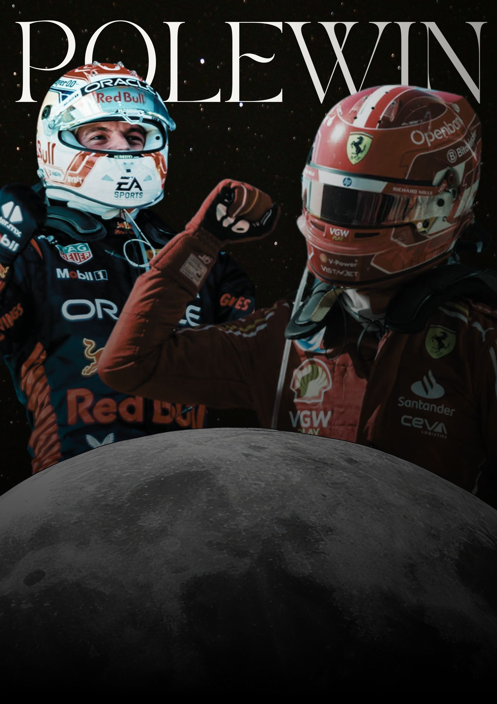
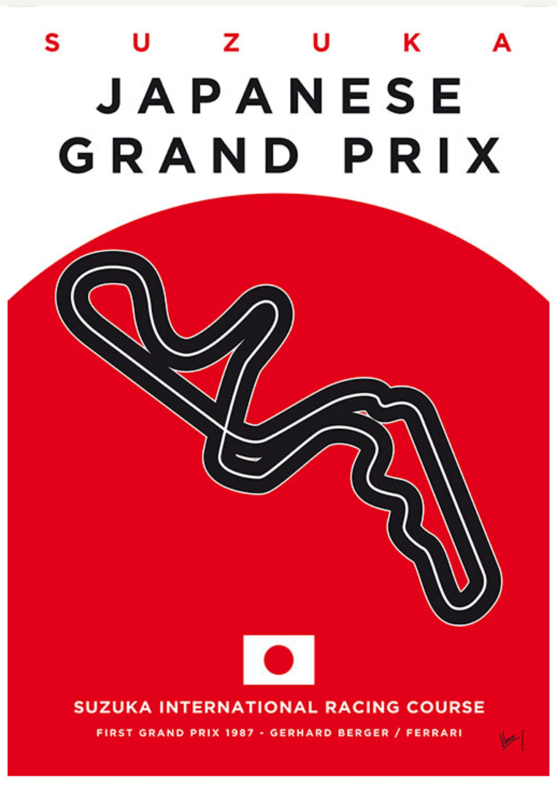
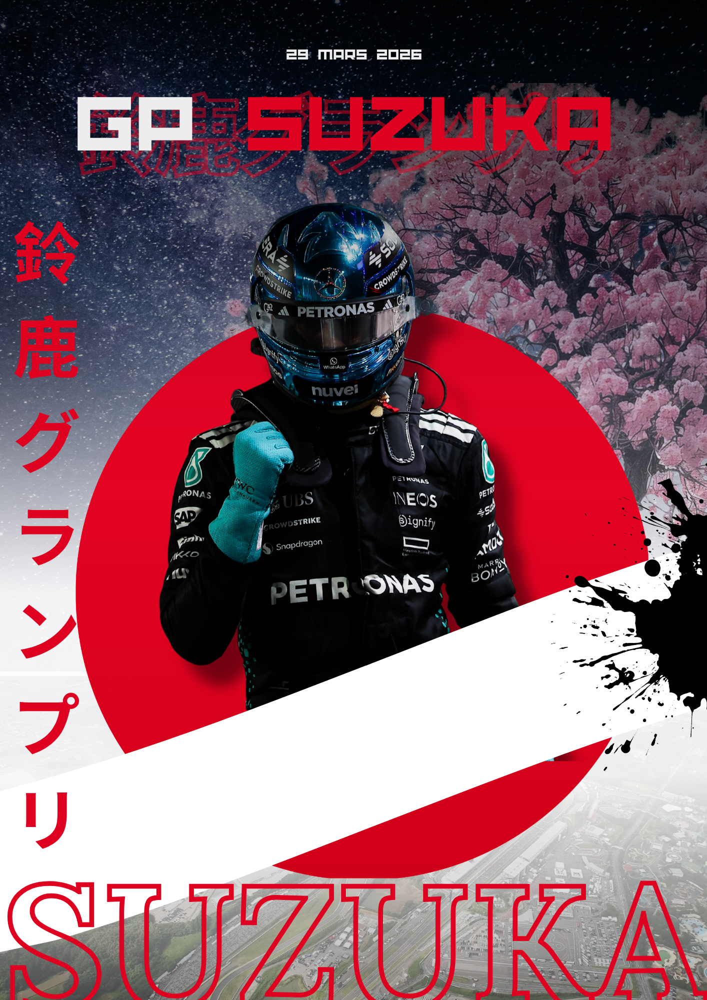

Application mobile dédiée aux fans de Formule 1 — pronostics, live chat, ligues entre amis. En charge de la stratégie marketing et du community management.
PoleWin est une application mobile dédiée aux fans de Formule 1, qui vise à rendre l'expérience des Grands Prix plus sociale et interactive. Elle permet de réaliser des pronostics en quelques secondes, d'échanger en live pendant les courses et de se challenger entre amis via des ligues privées.
Je suis en charge de la stratégie marketing et du community management, avec pour objectif de développer la visibilité et l'engagement autour du projet avant le lancement officiel.


